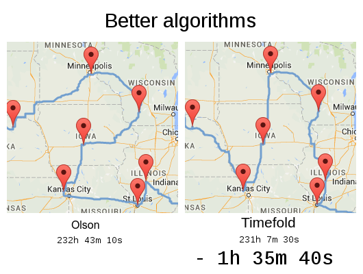
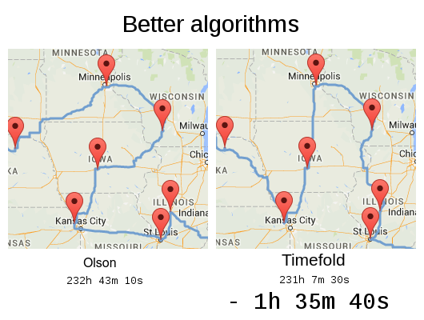

@GeoffreyDeSmet
@GeoffreyDeSmet
Field Service Routing
by Geoffrey De Smet
and Pieter De Saeger
The story of
the ultimate American road trip

https://www.washingtonpost.com/news/wonk/wp/2015/03/10/a-data-genius-computes-the-ultimate-american-road-trip/

Road trip for 50 landmarks, monuments, etc.

Traditional algorithm: 271h 35m 16s
Is it optimal?

Olson's trip: 232h 43m 10s
⇒ 38h 52m 6s faster (14%)
Is it optimal?
 



Olson's trip: 232h 43m 10s
Not optimal

Timefold's trip: 230h 17m 54s
⇒ Another 2h 25m 16s faster (1% ⇒ 15% in total)
Optimal, also 33km 710m (= 20.95 miles) shorter


TSP
is an academic problem
Vehicle Routing Problem


Vehicle Routing Problem (VRP)
DEMO
Real-time planning
Warm starts to solve in milliseconds


Real roads


False presumptions VRP


Assumption: An optimal VRP route uses only 1 vehicle.
Assumption: An optimal VRP route uses only 1 vehicle. (false)


Assumption: An optimal VRP route has no crossing lines.
Assumption: An optimal VRP route has no crossing lines. (false)


Assumption: An optimal, feasible VRP route with n vehicles is still optimal for n+1 vehicles.
Assumption: An optimal, feasible VRP route with n vehicles is still optimal for n+1 vehicles. (false)

Assumption: An optimal VRP route has no crossing lines of the same color.
Assumption: An optimal VRP route has no crossing lines of the same color. (false)


Assumption: We can focus on time windows before focusing on capacity (or vice versa).
Assumption: We can focus on time windows before focusing on capacity (or vice versa). (false)


Assumption: Humans optimize VRP optimally.
Assumption: Humans optimize VRP optimally. (false)

Can a manager reasonable judge if this is optimal?
The world is full
of scheduling problems
For example


The world is full
of scheduling problems
Some are automated
Few are optimized
Let's optimize them
with Java and AI
Is optimization worth it?
Remember 2022?
Panic!
Reality
Quick win
- -15% natural gas consumption
- Some impact on quality of life
Imagine if we optimize
for efficiency gains without sacrifices
Vehicle routing case study
Expected: -1% driving time
Result: -25% driving time
⇒ -10 million kg CO² emission per year
⇒ -100 million $ cost per year
Devoxx scheduling
Act 1
March 2023

The bet

It's on!

Act 2
May 2023
Stephan generates a Voxxed schedule with GPT...
... and declares victory.
Feasible, not optimal
What is a feasible schedule?
No hard constraints broken.


Feasible is easy
Optimal is hard.


My mistake
There is hope
Scale from Voxxed to Devoxx
- Voxxed: 30 sessions
- Devoxx: 210 sessions
- Is Devoxx just 7 times harder than Voxxed?
- Or is it 10365 times harder?
Act 3
August 2023
The Devoxx BE schedule
was generated with ...

Victory!
Victory over generative AI?
Generate tags with GPT
before solving
Generative AI + Solver AI
work together
Why difficult to solve?


The web UI


Calculate score
public long calculateScore(TimeTable timeTable) {
long hardScore = 0;
for (Lesson lesson1 : timeTable.lessons) {
for (Lesson lesson2 : timeTable.lessons) {
if (lesson1.room == lesson2.room
&& lesson1.timeslot == lesson2.timeslot) {
hardScore--;
}
if (lesson1.teacher == lesson2.teacher
&& lesson1.timeslot == lesson2.timeslot) {
hardScore--;
}
if (lesson1.studentGroup == lesson2.studentGroup
&& lesson1.timeslot == lesson2.timeslot) {
hardScore--;
}
}
}
return hardScore;
}Greedy algorithm


Greedy code
for (Lesson lesson : timeTable.lessons) {
long bestScore = Long.MIN_VALUE;
Room bestRoom = null;
Timeslot bestTimeslot = null;
for (Timeslot timeslot : timeTable.timeslots) {
lesson.setTimeslot(timeslot);
for (Room room : timeTable.rooms) {
lesson.setRoom(room);
long score = calculateScore(timeTable);
if (score > bestScore) {
bestScore = score;
bestRoom = room;
bestTimeslot = timeslot;
}
}
}
lesson.setTimeslot(bestTimeslot);
lesson.setRoom(bestRoom);
}DEMO
Greedy algorithm
Algorithm comparison
| Greedy | ||
|---|---|---|
| Fast | ||
| Scalable | ||
| Far from optimal |
Brute force


Brute force code
long bestScore = Long.MIN_VALUE;
for (Timeslot timeslotLesson1 : timeslots) {
lesson1.setTimeslot(timeslotLesson1);
for (Room roomLesson1 : rooms) {
lesson1.setRoom(roomLesson1);
for (Timeslot timeslotLesson2 : timeslots) {
lesson2.setTimeslot(timeslotLesson2);
for (Room roomLesson2 : rooms) {
lesson2.setRoom(roomLesson2);
...
for (Timeslot timeslotLessonN : timeslots) {
lessonN.setTimeslot(timeslotLessonN);
for (Room roomLessonN : rooms) {
lessonN.setRoom(roomLessonN);
int score = calculateScore(timeTable);
if (score > bestScore)
...DEMO
Brute Force


How big is the search space?
Search space for n lessons: nn
Search space for 400 lessons: 101040
Atoms in observable universe: 1080


Algorithm comparison
| Greedy | Brute Force | |
|---|---|---|
| Fast | Slow | |
| Scalable | Not scalable | |
| Far from optimal | Optimal |
Advanced algorithms
Metaheuristics
- Local Search
- Tabu Search
- Simulated Annealing
- Late Acceptance
- ...
+ advanced subsystem algorithms


Implement yourself?
Planning optimization made easy
- Library of optimization algorithms
- AI, not ML
- Open Source (Apache license)
- Actively developed by our Open Core company


Easy score calculator
public HardSoftScore calculateScore(TimeTable timeTable) {
long hardScore = 0;
for (Lesson lesson1 : timeTable.lessons) {
for (Lesson lesson2 : timeTable.lessons) {
if (lesson1.room == lesson2.room
&& lesson1.timeslot == lesson2.timeslot) {
hardScore--;
}
if (lesson1.teacher == lesson2.teacher
&& lesson1.timeslot == lesson2.timeslot) {
hardScore--;
}
if (lesson1.studentGroup == lesson2.studentGroup
&& lesson1.timeslot == lesson2.timeslot) {
hardScore--;
}
}
}
return HardSoftScore.of(hardScore, 0);
}DEMO
Metaheuristics
Algorithm comparison
| Greedy | Brute Force | Metaheuristics |
|---|---|---|
| Fast | Slow | Fast |
| Scalable | Not scalable | Scalable |
| Far from optimal | Optimal | (Near) Optimal |
How good are humans?
Result comparison
| Humans | Greedy | Brute Force | Meta heuristics |
|---|---|---|---|
| Slow | Fast | Slow | Fast |
| Scalable | Scalable | Not scalable | Scalable |
| Far from optimal | Far from optimal | Optimal | (Near) Optimal |
How good is Generative AI?
Result comparison
| Humans | Generative AI | Greedy | Brute Force | Meta heuristics |
|---|---|---|---|---|
| Slow | Fast | Fast | Slow | Fast |
| Scalable | Scalable? | Scalable | Not scalable | Scalable |
| Far from optimal | Far from optimal | Far from optimal | Optimal | (Near) Optimal |

Constraints


Let's try this out
after the break


DEMO
Employee scheduling


How do you define constraints?
Constraint Streams
Get incremental score calculation
without writing incremental score calculation.


Why not just Java Streams?
- Incremental
- Scoring specific
- Score explanation
DEMO
Constraint Streams
Constraint Streams
- Streams-like API
- Fast and scalable
- Incremental calculation
- Indexed joins
- Custom code friendly
Responding to change
"Plans are of little importance,
but planning is essential."
Winston Churchill
(Prime Minister UK 1940-1945)
"Everybody has a plan
until they get punched
in the mouth…"
Mike Tyson
(Boxer, heavyweight champion 1987-1990)
What kind of planning disruptions?
- Local disruption
- Impact limited to one department/region
- Global disruption
- Impact across the board
Local disruption

Global disruptions
- 2001 - September 11 attacks
- Air-traffic shut-down in North America for 2 days
- 2010 - Eyjafjallajökull volcano eruption
- Air-traffic shut-down in Europe for 8 days
- 2020 - COVID-19
- Flight cancellations
Planning agility paradox
"We can not automate planning
because the plans will change."
⇒
"We need to automate (re)planning
because the plans will change."
But how?
1) What is your
publication deadline?
Publication
- Tell employees when/how/where to work
- Publication deadline
- Technician routing: 1 hour before departure
- School timetabling: before end of vacation
- Guards: 4 weeks before shift
- Nurses: 6 weeks before shift
- Facility location: 6 months before opening


Multi-stage planning
- Strategic: expand the maternity ward?
- Tactical: hire a respiratory specialist?
- Operational: assign a Monday shift to Ann?
Each planning stage feeds into the next.
Especially for trains, airplanes, etc
- Strategic: add a stop in Philadelphia?
- Tactical: depart at 7 AM?
- Operational: Which locomotive and wagons?

Conway's law
"Any organization that designs a (software) system
will produce a design whose structure
is a copy of the organization's communication structure."
⇒
Planning problems solved by different groups
should use different Solver instances
(during the first year in production).
In practice
@Path("/trainWagon")
public class TrainWagonDeciderResource {
@Inject
SolverManager<TrainWagonSolution, ...> wagonSolverManager;
... wagonSolverManager.solve(...)
}
@Path("/trainPlatform")
public class TrainPlatformDeciderResource {
@Inject
SolverManager<TrainCrewSolution, ...> platformSolverManager;
// Uses TrainWagonSolution's output as problem facts:
// Length of train impacts eligible platforms
... platformSolverManager.solve(...)
}2) Do you assign to time?
No, domain lacks time data
For example:
- Facility Location Problem
- Knapsack Problem
No java.time import
Yes, Domain has time
but planning does not assign to time
import java.time.LocalDate;
@PlanningEntity
public class Patient {
private String name;
private LocalDate arrivalDate;
private LocalDate departureDate;
...
@PlanningVariable(...)
private Bed bed;
...
}Hospital bed planning does not change
a patient's arrival or departure date.
By the way...
Don't use java.util.Date for time manipulation.
It's like asking your bartender how to treat cancer.
Don't use java.util.Calendar either,
It's like asking your dog how to treat cancer.
Use java.time.LocalDate
or java.time.LocalDateTime instead!
Yes, Domain has time
and planning assigns to time
Pick a good domain model.


3) Do you replan
every week, day or hour?
Continuous planning
What is continuous planning?


Don't change history
@Entity
public class Shift {
private LocalDateTime start;
private LocalDateTime end;
@PlanningPin
private boolean history;
...
@PlanningVariable(...)
private Employee employee;
...
}Don't change published shifts?
@PlanningEntity
public class Shift {
private LocalDateTime start;
private LocalDateTime end;
@PlanningPin
// every historic shift is published
private boolean published;
...
@PlanningVariable(...)
private Employee employee;
...
}Maybe


How to paint yourself in a corner
Assign all respiratory specialists
to the last shift of your planning window
(even in other wards as normal nurses).
⇒
draft length >= 2 * publish length
Continuous planning
- Publish notice ranges from long to short
- Weeks: employee shift rostering, pharmacy on duty scheduling, ...
- Seconds: runway scheduling, gate scheduling, platform scheduling, ...
- Domain must contain dates or timestamps data
- So domain probably has
import java.time - Regardless if planning assigns to time or not.
- So domain probably has
- Planning windows must overlap
- ⇒ School timetabling is not continuous planning
4) Will published plan change?
Non-disruptive Replanning


Implementation
@PlanningEntity
public class Talk {
private Timeslot publishedTimeslot;
...
@PlanningVariable(...)
private Timeslot timeslot;
} Constraint publishedTimeslot(ConstraintFactory f) {
return f.forEach(Talk.class)
.filter(talk -> talk.getPublishedTimeslot() != null
&& talk.getTimeslot()
!= talk.getPublishedTimeslot())
.penalize(HardMediumSoft.ONE_MEDIUM)
.asConstraint(PUBLISHED_TIMESLOT);
}Non-disruptive Replanning
- Medium penalty: disrupt only to become feasible
- Timeslot in conference scheduling
- Soft penalty: disrupt if gain is higher than a threshold
- Room in conference scheduling
5) Does your problem
change every few (milli)seconds?
Real-time planning
Real-time planning
DEMO
Real-time planning
solver.addProblemFactChange(...)- Daemon mode
- Don't waste CPU time at night and during breaks
7) Do you have
a resource shortage?
Overconstrained planning
Overconstrained planning
- Nullable
@PlanningVariable(nullable = true)- medium constraint penalizes unassigned entities
- Not yet supported for VRP, use dummy vehicle workaround.
- Virtual resources
- Add virtual resources to the input problem
class Vehicle { boolean virtual; } - Soft constraint penalizes cost of virtual resources
- Add virtual resources to the input problem
Benchmarker

Benchmarker
DEMO
Get started
Start coding today
- Go to timefold.ai
- Click the Quickstarts repo button.
- Pick a quickstart from the README.
- Run it:
$ git clone https://github.com/TimefoldAI/timefold-quickstarts.git
...
$ cd timefold-quickstarts/java/vehicle-routing
$ mvn quarkus:dev
...Q & A
| Learn more | timefold.ai |
|---|---|
| Feedback |
|
| Get started |